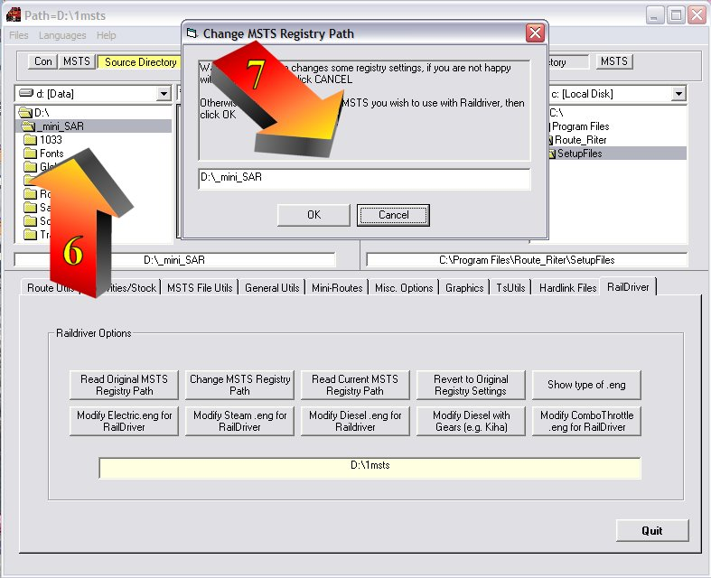

Route Riter Helps You Unpack Activities For Mini-Routes
by Mike Simpson
Overview
- Open Route_Riter.
Click on the "RailDriver" (arrow "1" below) tab; Click 'Read original MSTS registry path' (arrow "2" below); the original MSTS Registry path is displayed in the dialogue box below (arrow "3" below).
- Click 'Change MSTS registry path' (arrow "4" below) - this brings up a small window. Now drag this small window (arrow "5" below) over to the side or bottom so that it protrudes beyond the main Route riter screen (or you will lose it);
- Now select the mini-routes Train Simulator folder in the Left hand window of the Route_Riter main screen (arrow "6" below), and the path will appear in the box, e.g. d:\_mini_SAR (arrow "6" below)
{Note: I've dragged the small window back on top of Route Riter for clarity}
- Click "ok".
The registry is now altered, now drag your .apk onto your tsunpack (does not matter that it is in a different folder to your route) and it should unpack OK.
- Once you've finished, go back to Route_Riter and click the 'Revert to original reg settings' (arrow "8" below), then confiirm by clicking "ok" (arrow "9" below), and that puts things back to normal.
- You can check the status of the MSTS Registry at any tiome by clicking on 'Read Current MSTS path' (arrow "10" above).